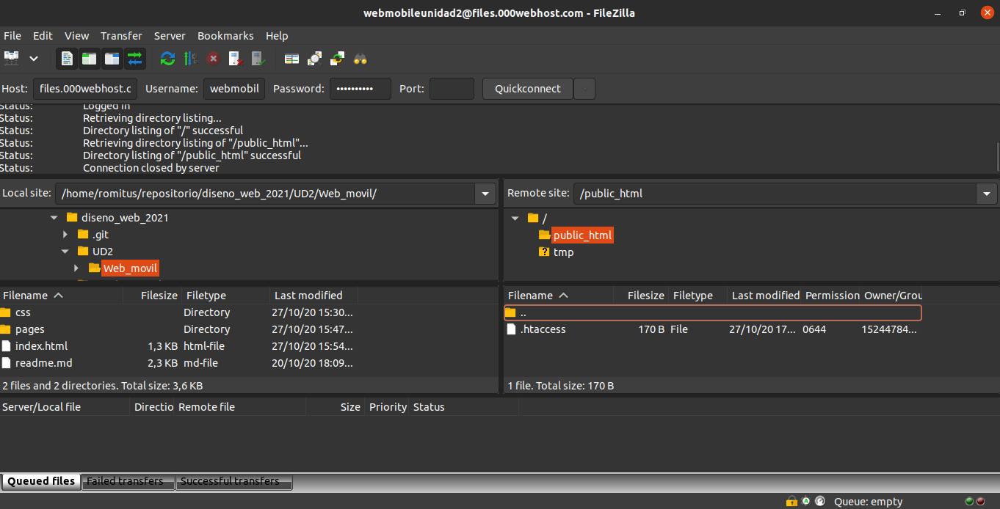
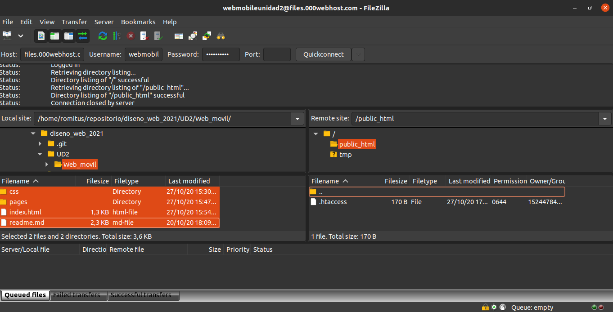
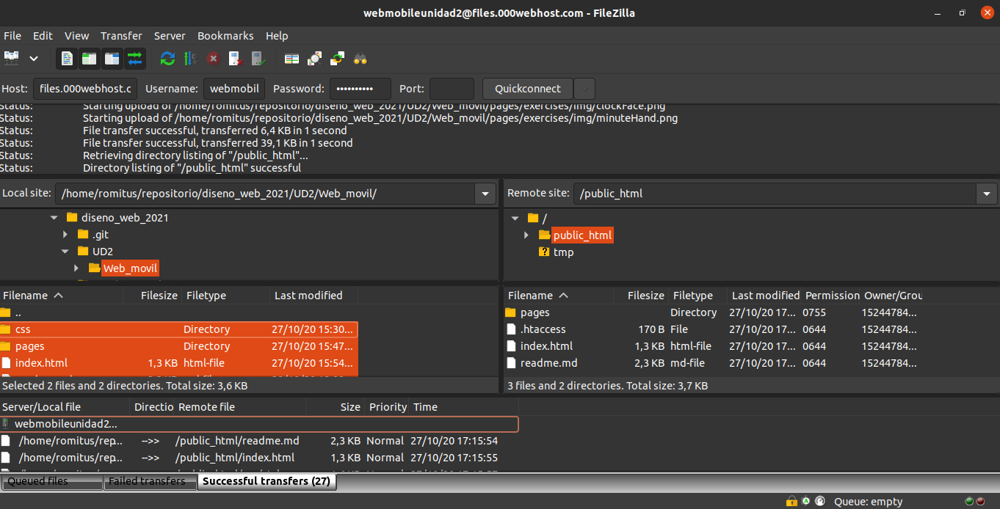

FTP
En este apartado vamos a mostrar como hacer la subidad de una pagina web a través de ftp.
Primero vamos a nuesto alojamiento web y recopilamos los datos de conexion ftp para poder acceder, una vez tegamos el host, usuario y contraseña, nos dirigimos a nuestra aplicacion ftp favoritas en este caso usaremos filezilla.
Seleccionamos los archivos de la pagina web a subir y los trasladamos a la ventana de la derecha en el directorio public_html.
Una vez que todas las transferencias de los archivos hayan sido correctas la página estaŕá subida correctamente.